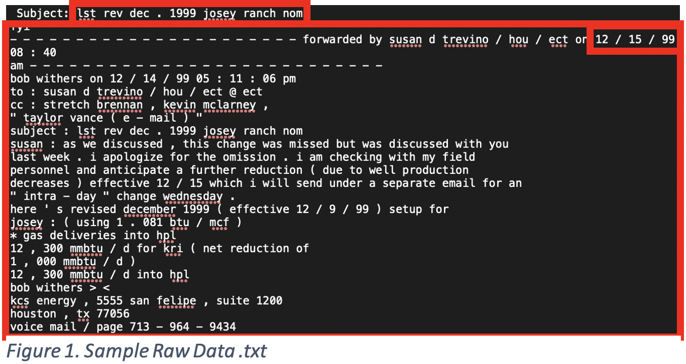
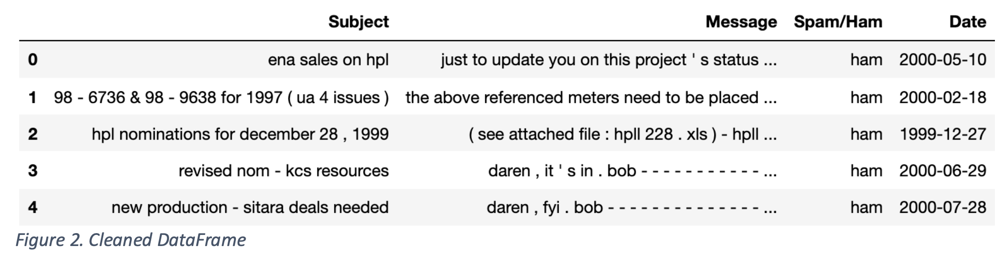
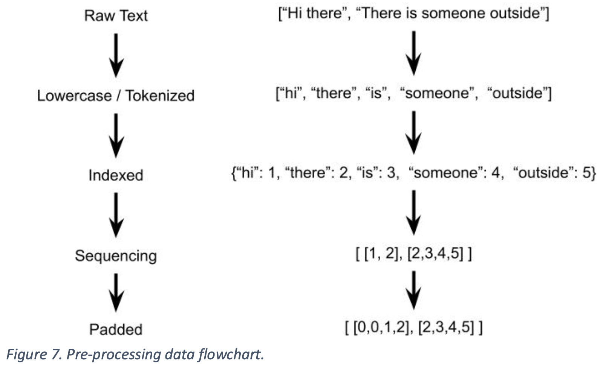
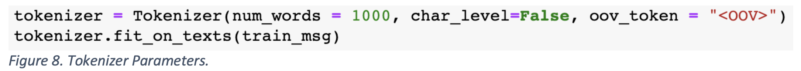
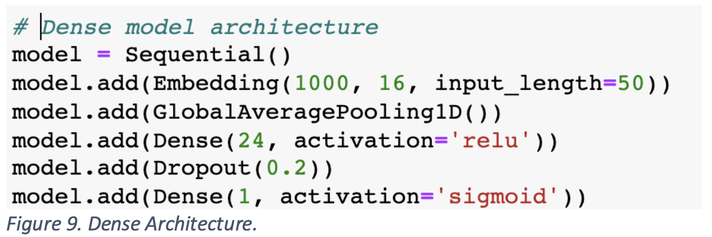
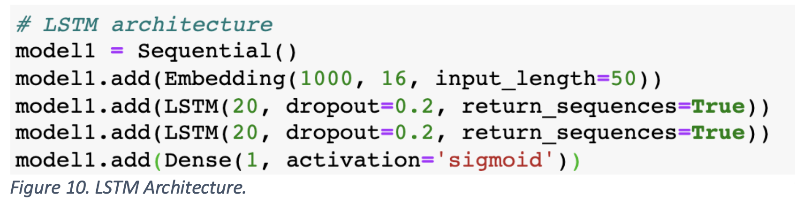
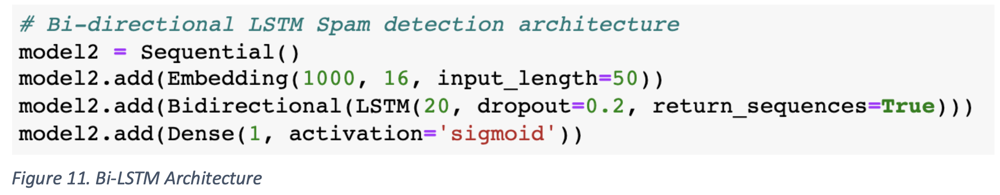
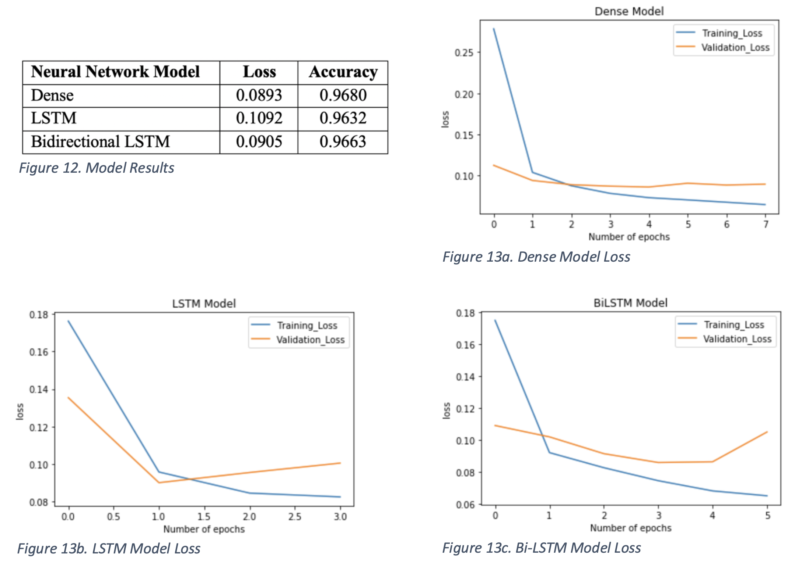
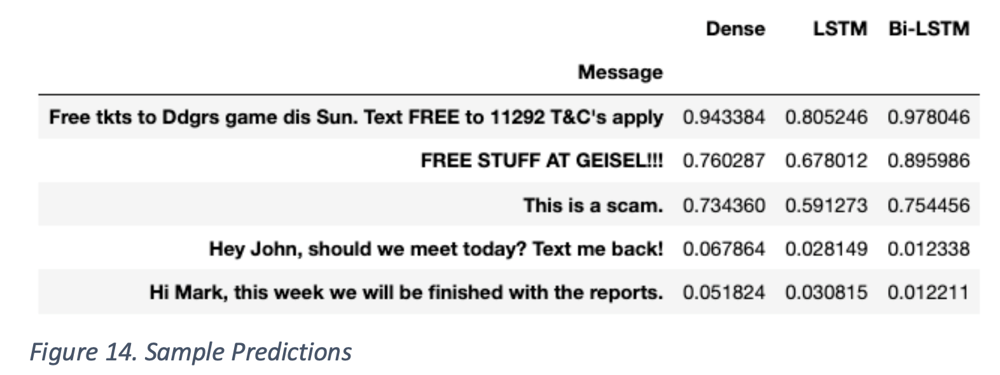
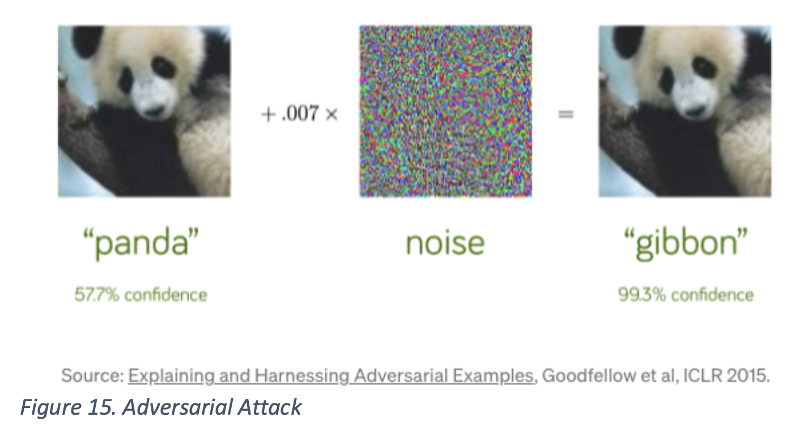

How do we extract features from text to identify spam messages?
Abstract
Spam emails in the United States costs approximately 20 billion annually, compared with approximately 200 million in surplus generated by the spam to users (David Reiley). Spamming is a big problem that is not
an easy problem to solve manually. With the booming age of technology, spams are generated and sent at an unprecedented rate and this calls for a more innovative way of blocking out spam emails.
Luckily for us, we also happen to live in an age where Machine Learning and Natural Language Processing methods can be implemented to build a classification model to distinguish whether a given email is a spam or not.
Dataset Overview
The dataset was taken from Enron. The dataset contains ~33k emails, approximately evenly split between spam and not spam. However, the data is raw and needs a lot of pre-processing before any data manipulation can be done.
Data Cleaning
The raw format of the dataset contains two folders filled with .txt files; one for spam messages and another for non-spam messages. Figure 1 shows a sample .txt file.

The steps to clean each .txt files are as follows:
Extract first line and record as ‘subject’.
Everything else besides the first line will be part of the message.
Utilizing regular expression (REGEX), extract first date encountered based on
format.
After applying these steps to all .txt files, a DataFrame will be generated by Pandas with the format shown on Figure 2.

Exploratory Data Analysis
The dataset is relatively balanced with a discrepancy of around 1.8% of the total messages. Figure 3 shows a bar plot of the division between spam and non-spam messages.
It is shown that the dataset that will be used to train is a well-balanced one. Figure 4 shows the time frame of these messages. Most of the messages being sent are between 2000-2001 and 2004-2005. There seems to be a gap between 2002-2003, but this should not create any significant error.
Figure 5 and 6 shows word-clouds for genuine and spam messages, respectively. Notice that official and formal words are likely to be found on the genuine word-cloud, whereas words on the second word-cloud are typically found in spam messages.
Data Preprocessing
Each row (message) from the DataFrame goes through a flow of data pre-processing before it is used to train models. The flow is depicted in Figure 7.

The raw data consists of the Message column of the DataFrame. The next step is to convert to lowercase and tokenize word-per-word. Unique words will then be put inside an index, denoted by an integer. Each message is then converted to an array of integers based on the word index. Lastly, the sequences are padded in the front so that all messages have the same length. Now, since the text is converted to a numerical representation, it can be quantified and used to train the models later on.
The word index is used to filter out rare words. In order to detect spam messages, the words that the model will look for in messages would be common words that appear in spam messages; hence the need to record rare words are insignificant. Other than converting to lowercase, punctuations are also removed.

In Figure 8, we utilize Keras’s Tokenizer to create the word index. The size that was chosen for the index is 1000 words, meaning 1000 unique words will be loaded into the index. char_level is set to False since we are evaluating word-per-word not letter-per-letter. The oov_token parameter is to specify that we want to take into account words that do not get added into the word index corpus. After the tokenizing above, the messages are sequenced and padded accordingly. The feature length of each message will be limited to the first 50 words.
Model Training
Three different neural models will be trained with the pre-processed dataset. Each model is built with Keras’s sequential model. Layers will be added sequentially according to what each model specifies for.
Dense Model
The first layer of the dense model will be the embedding layer which is useful for algorithms involving NLP to convert the padded sequence of length 50, into an array of 16 numbers. This involves one-hot encoding as well as dimensionality reduction. Also, the input_length will be 50 as it is the length of our padded sequence.
The second layer involves a global average pooling layer to reduce the parameters used in the model to avoid overfitting.
The third layer is a dense layer with Rectified Linear Unit as its activation function, along with 24 neurons.
The fourth layer is a dropout layer to further prevent overfitting. The parameter is 0.2 which randomly assigns input as 0 every (1/0.2=) 5 steps.
The final layer uses Sigmoid as its activation function, outputs probability between 0 and 1, and only has 1 neuron since it is a binary label (Spam/Not Spam).

Long Short-Term Memory (LSTM) Model
The first layer of the LSTM model will be the embedding layer, same as the previous model.
The second and third layers are LSTM layers stuck horizontally. The point of stacking two LSTM layers as to create a hierarchical feature representation. LSTM is a Recurrent Neural Network, which is useful in sequenced data types, such as words in a sentence in this case. Having multiple layers of LSTM will uncover features derived from the position of words in a sentence relative to other words. It has an integrated Dropout to prevent overfitting which is crucial due to the high complexity nature of LSTM layers.
The final layer uses Sigmoid as its activation function, outputs probability between 0 and 1, and only has 1 neuron since it is a binary label (Spam/Not Spam).

Bidirectional Long Short-Term Memory (Bi-LSTM) Model
The first layer will be the embedding layer, same as the previous models.
The second layer is an LSTM layer wrapped with Bidirectional. The point of using
the Bidirectional wrapper is to allow the LSTM nature to propagate both forwards and backwards. It is natural to extract features that relate to the position of word in a sentence, and also incorporating whether a word is before or after another word. It has an integrated Dropout to prevent overfitting which is crucial due to the high complexity nature of Bi-LSTM.
The final layer uses Sigmoid as its activation function, outputs probability between 0 and 1, and only has 1 neuron since it is a binary label (Spam/Not Spam).

Evaluation / Model Selection
While training the three neural models, accuracy was above 96% and all models perform similarly with each other. Figure 12 shows the test set accuracy for each of the three models. Figures 13.a-c depicts the train and test set accuracy through epochs of training for all models.

The results from each of three models are strikingly similar and highly accurate. The models that are built from the message dataset seems to be possessing features that are extractable and recognized by all three neural network models above. As a matter of fact, it seems that both the LSTM and Bi-LSTM models are high in complexity due to the validation error being more steeply increasing than the Dense model. This is crucial to note as the data that was fed into the models comes from one source, specifically a single company. It is likely that the models will be overfitting to features like formal language and company jargons.
In Figure 14, sample messages are passed on to each model to predict. The results are shown on the table. The values shown denote the probability that the message is a spam, classified by each model.

Precision as Metric
The neural networks trained above utilizes accuracy as its metric. This means that through every run of the training step, it will reconfigure weights of the neurons with the objective of increasing accuracy. Sometimes accuracy is not the perfect metric to use when training. An unbalanced dataset might introduce a bias in the algorithm to predict a label as the more dominant one. Having multiple-class labels may result in only a few of the labels being considered in the labeling process.
Precision is an alternative to Accuracy. Precision is defined as the ratio between True Positives and All Predicted Positives. In other words, it measures how many percent of the messages that are tagged as spam, are actually spam. If precision is used as the metric in training the models, then the classifier will maximize the percentage of actual spam messages of all the predicted spams. This minimizes the amount of genuine messages labeled as spam.
Another alternative is Recall. Recall is defined as the ratio between True Positives and All Positive Observations. In other words, it measures the percentage of spam message observations that are labeled by the model as spam. If recall is used as the metric in training the models, then the classifier will maximize the percentage of correctly predicted spam messages of all spam message observations. This minimizes the amount of spam messages that are labeled as genuine.
Notice how Precision and Recall are somehow two sides of the same coin. An example where Precision is used would be identifying a good stock to purchase. In this case, the algorithm would rather make a mistake identifying a good stock to buy as bad, rather than misleading users by labeling a bad stock to buy as good. The algorithm cannot afford to make the mistake of labeling a stock as a good one (predicting True, when False) and would play it safe in identifying good stocks when it is certain. An example where Recall is used would be identifying criminals at security checkpoints. In this case, officers would rather make a mistake of identifying a normal person as a criminal than identifying a criminal as a normal person. They can afford to make the mistake of being too careful (predicting True, when False) rather than letting a criminal go through.
In the case of spam detection, precision should be used. Would a person rather receive a spam promotional email in his/her primary inbox or have a very important document sent into the spam inbox? The former should be the more desirable outcome. The algorithm cannot afford to predict a message as spam when it is genuine and should rather predict a message as genuine when it is spam.
Adversarial Attacks
Neural network models can be considered the epitome of machine learning. Although it is a new discipline that has outperformed most machine learning models, it has some serious flaws. In 2014, NYU and Google conducted a research into fooling Convolution Neural Networks. The neural network that they tinkered around with was an image detection network that can properly identify the subject of the image.

In Figure 15, the attack starts with a clear picture of a panda. The neural network classifies it as “panda” with 57.7% confidence. However, when the image is altered with noise, the model classifies it as a “gibbon” with 99.3 confidence. The odd fact here is that the image after tampered with the noise seems to not have changed since initially, to the human eye; one can clearly see that it is still a picture of a panda. On top of that, it misclassifies the image as “gibbon” with a confidence level of being close to 100%.
In the case of adversarial attacks to spam filters, a carefully constructed sequence of words might be able to have the same effect as the noise did on the neural network above. Adversarial attacks are much simpler to execute with text since there are more loopholes to watch. For instance, one way to get around the filtering of a spam message would be to convert spam “trigger” words by putting spaces between letters of the word. With this technique, the tokenizer of the pre-processing stage will miss the fact that these letters are part of the same word and will lead to a spam message being classified as genuine.
The brute-force technique of preventing adversarial attacks is to be the attacker and generate “noise” examples that might mess up the model. The model will then be “told” to not be fooled by manual override and learn not to misclassify with that specific adversarial attack. However, this becomes taxing as it turns into a race between the pseudo-attacker and the attacker.
The intuition behind why neural networks are vulnerable relies on some of its activation functions. It depends on a certain threshold that can easily be manipulated through small tweaks in the datum’s features. It also lies on the fact that most neural network models train on a very small subset of data that it might encounter. Considering that there are usually tens of thousands of parameters in a neural network, a small discrepancy might lead to a large change in its output and overall robustness.
Spam Detection Predictor
Below is an image taken from running the predictor that can be found on the GitHub link at the top of the page. It is a script that is run in the Terminal and lets users input a specified message and the algortihm will run the prediction through the Bidirectional LSTM neural model and give a verdict of whether or not the message is a spam message. It gives a probability of the message being deemed as a spam message.
 It is shown that the dataset that will be used to train is a well-balanced one. Figure 4 shows the time frame of these messages. Most of the messages being sent are between 2000-2001 and 2004-2005. There seems to be a gap between 2002-2003, but this should not create any significant error.
Figure 5 and 6 shows word-clouds for genuine and spam messages, respectively. Notice that official and formal words are likely to be found on the genuine word-cloud, whereas words on the second word-cloud are typically found in spam messages.
It is shown that the dataset that will be used to train is a well-balanced one. Figure 4 shows the time frame of these messages. Most of the messages being sent are between 2000-2001 and 2004-2005. There seems to be a gap between 2002-2003, but this should not create any significant error.
Figure 5 and 6 shows word-clouds for genuine and spam messages, respectively. Notice that official and formal words are likely to be found on the genuine word-cloud, whereas words on the second word-cloud are typically found in spam messages.